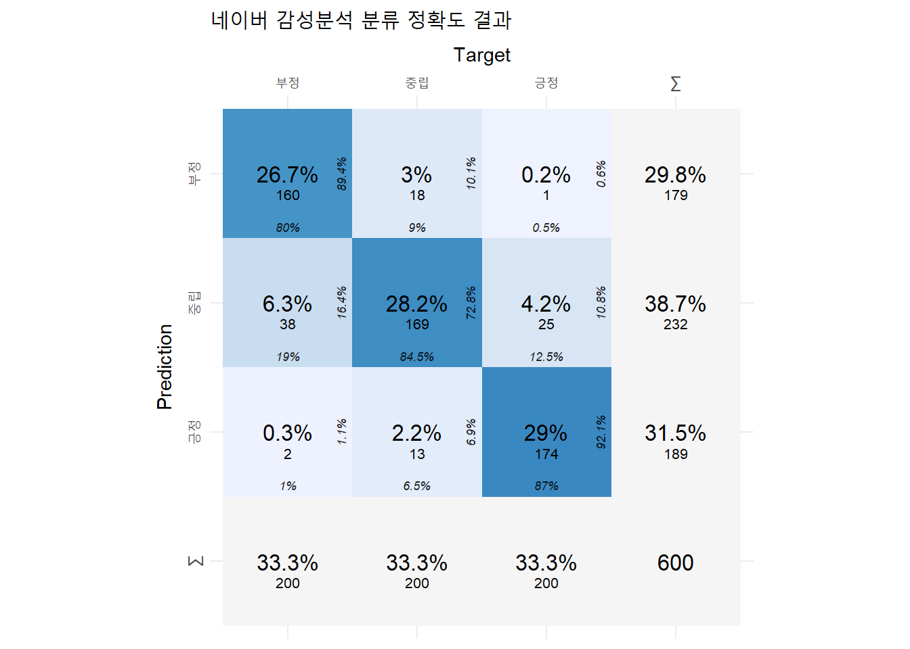
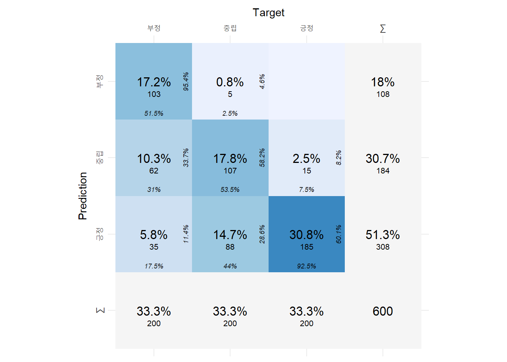
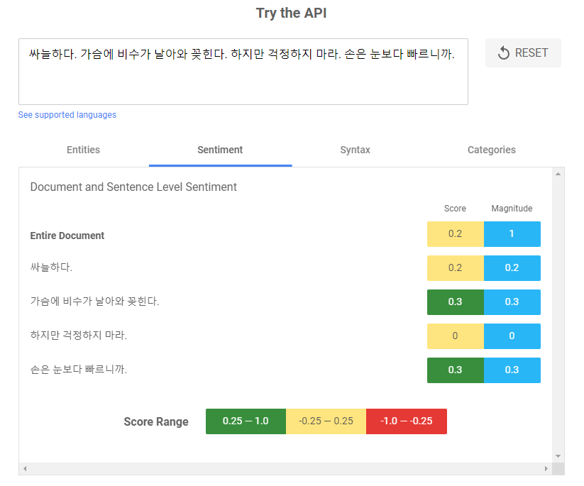

pacman::p_load(
"tidyverse", "tidytext", "data.table", "knitr", "gt", "scales", "cvms", "DT",
"httr", "jsonlite", "future", "furrr")들어가기
한국어 자연어 처리에서 감성 분석 서비스를 하는 구글과 네이버의 성능을 비교한다.
1. 데이터 준비하기
분석에 필요할 패키지를 불러온다.
분석에 쓸 데이터를 여기에서 다운 받아 불러온다.
db_sent_1a <- fread('data/sample.csv')데이터는 구글 리뷰 문장(sent_content)을 긍정과 중립, 부정으로 라벨링(label)하고 구글 자연어 처리의 감성분석 점수(score)로 구성된다.
| sent_content | label | senti_score_google |
|---|---|---|
| 탁트인 한강 전망이 좋아요 | 긍정 | 0.9 |
| 물난리 후 첫주말에 갔는데 | 중립 | -0.1 |
| 교통,주차 너무힘들어요 | 부정 | 0.0 |
위 데이터에서 긍정과 중립, 부정을 각각 200개씩 무작위로 샘플링한다.
set.seed(777) # 난수 고정
db_sent_1b <- db_sent_1a %>%
group_by(label) %>%
sample_n(200) %>% ungroup() %>%
arrange(label) %>%
mutate(id = row_number())2. 감성분석
2.1. 네이버 감성분석
감성분석 준비
CLOVA Sentiment 서비스 설명과 가이드라인은 여기에서 볼 수 있다. 콘솔 접속과 서비스 활성화, 인증정보 등을 따라하면 된다.
R을 활용한 네이버 감성분석
아래 코드로 할당받은 네이버 감성분석 API를 활용하여 샘플 데이터를 감성분석한다.
# Define API endpoint and headers
url <- "https://naveropenapi.apigw.ntruss.com/sentiment-analysis/v1/analyze"
client_id = "" # 할당된 클라이언트 ID
client_secret = "" # 할당된 API key
headers_user <- c(
"X-NCP-APIGW-API-KEY-ID" = client_id,
"X-NCP-APIGW-API-KEY" = client_secret,
"Content-Type" = "application/json"
)
db_sent_1c <- db_sent_1b %>%
group_split(id)
db_sent_2a <- rbindlist(
future_map(db_sent_1c, function(x){
sent_content_input <- x$sent_content
seti_analysis_respon <- POST(
url = "https://naveropenapi.apigw.ntruss.com/sentiment-analysis/v1/analyze",
body = toJSON(list(content = sent_content_input) , auto_unbox = TRUE, pretty = TRUE),
add_headers(.headers = headers_user),
encode = "json") %>%
content()
doc_dt <- data.table(
doc_content = sent_content_input,
doc_senti = seti_analysis_respon$document$sentiment,
doc_confi_neg = seti_analysis_respon$document$confidence$negative,
doc_confi_posi = seti_analysis_respon$document$confidence$positive,
doc_confi_neut = seti_analysis_respon$document$confidence$neutral
)
# create a data.table of sentence-level information
sent_dt <- data.table(
sent_content = sapply(seti_analysis_respon$sentences, function(x) x$content),
sent_offset = sapply(seti_analysis_respon$sentences, function(x) x$offset),
sent_length = sapply(seti_analysis_respon$sentences, function(x) x$length),
sent_sentiment = sapply(seti_analysis_respon$sentences, function(x) x$sentiment),
sent_confi_neg = sapply(seti_analysis_respon$sentences, function(x) x$confidence$negative),
sent_confi_posi = sapply(seti_analysis_respon$sentences, function(x) x$confidence$positive),
sent_confi_neut = sapply(seti_analysis_respon$sentences, function(x) x$confidence$neutral),
sent_highlight_offset = sapply(seti_analysis_respon$sentences, function(x) x$highlights[[1]]$offset),
sent_highlight_length = sapply(seti_analysis_respon$sentences, function(x) x$highlights[[1]]$length)
)
print("end")
comb_dt <- cbind(id = x$id, doc_dt, sent_dt)
}))감성분석 결과는 다음과 같다. 여기서 doc와 senti로 시작하면 각각 문서와 그 문서를 구성하는 문장으로 나타낸다. 네이버 클로버 감성분석은 분석하는 문서(doc)의 문장을 자동으로 분류해준다.
| id | doc_content | doc_senti | doc_confi_neg | doc_confi_posi | doc_confi_neut | sent_content | sent_offset | sent_length | sent_sentiment | sent_confi_neg | sent_confi_posi | sent_confi_neut | sent_highlight_offset | sent_highlight_length |
|---|---|---|---|---|---|---|---|---|---|---|---|---|---|---|
| 1 | 그늘도 많고 쉴자리도 많아요. | positive | 0.0002367 | 99.99958 | 0.0001859 | 그늘도 많고 쉴자리도 많아요. | 0 | 16 | positive | 0.0000142 | 0.9999746 | 0.0000112 | 0 | 15 |
| 2 | 공기좋음 | positive | 0.0367223 | 99.95812 | 0.0051644 | 공기좋음 | 0 | 4 | positive | 0.0022033 | 0.9974868 | 0.0003099 | 0 | 4 |
| 3 | 맑은하늘을 맘껏볼수있는곳 | positive | 0.0001375 | 99.99956 | 0.0003061 | 맑은하늘을 맘껏볼수있는곳 | 0 | 13 | positive | 0.0000083 | 0.9999734 | 0.0000184 | 0 | 13 |
2.2. 구글 감성분석
구글 감성 분석은 여기에서 자세히 배울 수 있다. 네이버 감성분석과 같이 R를 활용하여 구글 감성 분석 API를 쓰는 방법은 추후에 업데이트하고자 한다.
3. 감성분석 비교
3.1. 분류 정확도 요약
네이버 감성분석은 F1 점수가 0.84로 구글 감성분석 0.642보다 더 높았다.
| 지표 | 네이버 감성분석 | 구글 감성분석 | 구글 감성분석(조정 후) |
|---|---|---|---|
| F1-score | 0.840 | 0.642 | 0.718 |
| Balanced Accuracy | 0.879 | 0.736 | 0.788 |
3.2. 비교 데이터셋 만들기
분석할 감성분석 결과 DB를 만들어준다.
db_sent_2b <- unique(db_sent_2a, by = "id") %>%
select(id, doc_senti)
db_sent_f <- db_sent_1b %>%
left_join(db_sent_2b, by = "id") %>%
mutate(
senti_label_google = case_when(
between(senti_score_google, 0.25, 1) ~ "긍정",
between(senti_score_google, -0.25, 0.25) ~ "중립",
TRUE ~ "부정"),
senti_label_naver = case_when(
doc_senti == "positive" ~ "긍정",
doc_senti == "neutral" ~ "중립",
TRUE ~ "부정")
) %>%
select(id, sent_content, senti_label_google, senti_label_naver, label) %>%
mutate_at(c("senti_label_google", "senti_label_naver", "label"), factor, levels = c("부정", "중립", "긍정"))conf_mat_google <- confusion_matrix(
targets = db_sent_f$label,
predictions = db_sent_f$senti_label_google
)
conf_mat_naver <- confusion_matrix(
targets = db_sent_f$label,
predictions = db_sent_f$senti_label_naver
)3.3. 감성분석 상세
네이버 감성분석
plot_confusion_matrix(conf_mat_naver$`Confusion Matrix`[[1]],
class_order = c("긍정", "중립", "부정"),
add_sums = TRUE) +
ggplot2::labs(title = "네이버 감성분석 분류 정확도 결과")Warning in plot_confusion_matrix(conf_mat_naver$`Confusion Matrix`[[1]], :
'ggimage' is missing. Will not plot arrows and zero-shading.Warning in plot_confusion_matrix(conf_mat_naver$`Confusion Matrix`[[1]], :
'rsvg' is missing. Will not plot arrows and zero-shading.Warning in plot_confusion_matrix(conf_mat_naver$`Confusion Matrix`[[1]], :
'ggnewscale' is missing. Will not use palette for sum tiles.
잘못 분류한 문장
중립 문장을 긍정으로 잘못 분류한 경우
db_sent_2b <- unique(db_sent_2a, by = "id") %>%
select(id, doc_senti, doc_confi_posi, doc_confi_neut, doc_confi_neg)
db_sent_f <- db_sent_1b %>%
left_join(db_sent_2b, by = "id") %>%
mutate(
senti_label_google = case_when(
between(senti_score_google, 0.25, 1) ~ "긍정",
between(senti_score_google, -0.25, 0.25) ~ "중립",
TRUE ~ "부정"),
senti_label_naver = case_when(
doc_senti == "positive" ~ "긍정",
doc_senti == "neutral" ~ "중립",
TRUE ~ "부정")
)
data.table(db_sent_f)[label == "부정" & senti_label_naver == "중립"][
, .(id, sent_content, label, senti_label_naver, doc_confi_posi, doc_confi_neut, doc_confi_neg)] id sent_content label senti_label_naver
1: 210 힐링하러 갔다가 헬링 당한 곳 부정 중립
2: 216 타는 장소도 너무 멀고, 부정 중립
3: 217 인파도 많고 난잡하기도 하다. 부정 중립
4: 221 입장료가 비싼편이라 생각해요 부정 중립
5: 226 살짝 실망스러운 모습이라. 부정 중립
6: 230 넘 사람들이 많다. 부정 중립
7: 231 인성개씨발동네 ㄹㅇ 부정 중립
8: 236 노잼이고 막 볼것도 없다. 부정 중립
9: 246 불볕더위에 땡볓이지만 부정 중립
10: 251 주차장이 없어요. 부정 중립
11: 260 대중교통이 차라리 나아요. 부정 중립
12: 269 걍 집에서 잠이나 자세요 부정 중립
13: 271 지금 시즌은 별로인 듯해요. 부정 중립
14: 274 주차장 비좁음. 부정 중립
15: 275 밤엔 넘 춥다. 부정 중립
16: 277 사람 너무많다. 부정 중립
17: 279 기대가 커서 그런가 실망도 크다. 부정 중립
18: 280 볼것도없고그냥뭐동네뒷산갔다온느낌 부정 중립
19: 302 너무 사람많음 부정 중립
20: 310 주차 완전 힘듭니다. 부정 중립
21: 315 주차가 가장 짜증 났습니다 부정 중립
22: 316 개선이 필요합니다 부정 중립
23: 325 극악의 주차 부정 중립
24: 335 차도 너무 막혔네요. 부정 중립
25: 340 주차 진짜 쒯입니다. 부정 중립
26: 341 맞기라도 하면.상상도 싫으네요 부정 중립
27: 343 저녁 때 사람이 많긴 하지만 부정 중립
28: 358 시설이 노후됫습니다 ㅠㅜ 부정 중립
29: 360 리모델링이 시급하네요 부정 중립
30: 363 ㅜㅠ 바람도 춥고 해서 아쉬웠네요 부정 중립
31: 364 집회때문에 너무 불편했어요 부정 중립
32: 365 광장에 사람들이 넘 많이 모였어요 부정 중립
33: 372 쓰레기냄새남 부정 중립
34: 373 의자도 별로 없고, 부정 중립
35: 381 사람구경만 졸라하다 부정 중립
36: 391 찾는 이가 없음. 부정 중립
37: 396 주차공간협소 부정 중립
38: 398 주차 헬 부정 중립
id sent_content label senti_label_naver
doc_confi_posi doc_confi_neut doc_confi_neg
1: 0.002516054 99.99630 0.001187555
2: 0.076974176 97.06975 2.853277200
3: 0.064776120 99.74305 0.192171300
4: 0.008725748 99.98264 0.008629889
5: 0.100952960 99.67683 0.222217780
6: 0.271925180 98.22211 1.505968600
7: 0.123892054 93.11234 6.763764400
8: 0.023809950 99.92928 0.046910760
9: 0.066535760 99.89360 0.039866920
10: 0.006073157 99.67338 0.320546840
11: 0.062801205 99.88726 0.049936870
12: 0.392281380 99.26622 0.341496530
13: 0.023040438 99.92218 0.054779444
14: 0.789424060 61.47467 37.735905000
15: 0.002088725 99.99641 0.001495643
16: 0.145121800 99.69920 0.155682190
17: 0.055910440 99.67062 0.273466380
18: 0.309557470 99.57802 0.112426504
19: 0.017323079 99.94631 0.036366973
20: 0.601401900 97.76577 1.632826100
21: 0.789424060 61.47467 37.735905000
22: 0.496102060 99.48928 0.014619959
23: 0.193368870 99.60049 0.206140460
24: 0.022184083 99.87048 0.107330120
25: 0.021959830 99.90194 0.076099320
26: 0.004861866 99.98780 0.007340889
27: 0.017429445 96.66999 3.312579900
28: 0.091496530 99.81611 0.092393720
29: 0.070926390 99.47028 0.458789140
30: 0.351080270 98.24281 1.406106100
31: 0.026297357 99.95812 0.015587593
32: 0.430049840 93.90658 5.663370600
33: 0.068197310 99.88186 0.049946714
34: 0.265411100 99.56754 0.167052850
35: 0.660176630 92.43296 6.906865600
36: 0.182308810 99.71406 0.103631936
37: 0.036754236 99.89362 0.069629155
38: 0.248254840 99.72199 0.029763816
doc_confi_posi doc_confi_neut doc_confi_neg구글 감성분석
plot_confusion_matrix(conf_mat_google$`Confusion Matrix`[[1]],
class_order = c("긍정", "중립", "부정"),
add_sums = TRUE)Warning in plot_confusion_matrix(conf_mat_google$`Confusion Matrix`[[1]], :
'ggimage' is missing. Will not plot arrows and zero-shading.Warning in plot_confusion_matrix(conf_mat_google$`Confusion Matrix`[[1]], :
'rsvg' is missing. Will not plot arrows and zero-shading.Warning in plot_confusion_matrix(conf_mat_google$`Confusion Matrix`[[1]], :
'ggnewscale' is missing. Will not use palette for sum tiles.
구글 감성분석 parameter
문장별로 감성점수를 제공하는 구글 자연어처리 서비스에서 점수를 긍정과 부정, 중립으로 나누는 기준이 모호하다는 생각이 들었다. 아래 예시와 같이, ‘싸늘하다’ 등은 부정적으로 느껴지지만 구글 감성점수 기준에서는 중립에 속한다.

긍정과 긍정을 결정하는 기준을 다르게해서 구글 감성분석 라벨을 다시 매겨보았다.
list_parameter <- expand.grid(
threshold_posi = seq(0.25, 0.95, 0.05),
threshold_neg = seq(0.25, -0.95, -0.05)) %>%
mutate(id = row_number()) %>%
group_split(id)
result_senti_google_param <- rbindlist(future_map(
list_parameter, function(x){
db_sent_f <- db_sent_1b %>%
left_join(db_sent_2b, by = "id") %>%
mutate(
senti_label_google = case_when(
between(senti_score_google, x$threshold_posi, 1) ~ "긍정",
between(senti_score_google, -1, x$threshold_neg) ~ "부정",
TRUE ~ "중립")) %>%
select(id, sent_content, senti_label_google, label) %>%
mutate_at(c("senti_label_google", "label"), factor, levels = c("부정", "중립", "긍정"))
conf_mat_google <- confusion_matrix(
targets = db_sent_f$label,
predictions = db_sent_f$senti_label_google)
out <- cbind(x, F1 = conf_mat_google$F1, `Balanced Accuracy` = conf_mat_google$`Balanced Accuracy`)
}
))내가 매긴 라벨이 정답이라는 가정 하에, 기준 값을 조정하면 F1 점수는 0.7181로 기준 0.5534에서 높아진다.
| id | F1 | threshold_posi | threshold_neg |
|---|---|---|---|
| 127 | 0.7181 | 0.55 | -0.15 |
| 128 | 0.7181 | 0.60 | -0.15 |
| 142 | 0.7181 | 0.55 | -0.20 |
| 143 | 0.7181 | 0.60 | -0.20 |
| 129 | 0.7174 | 0.65 | -0.15 |